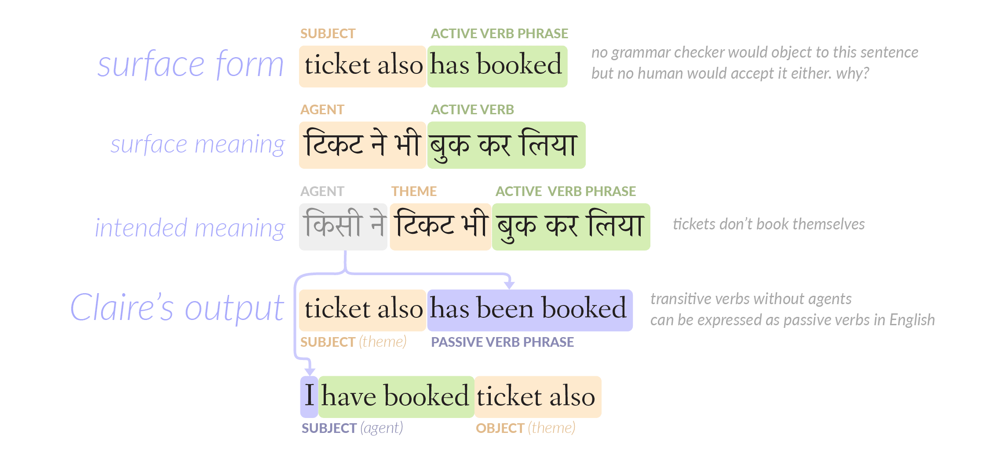
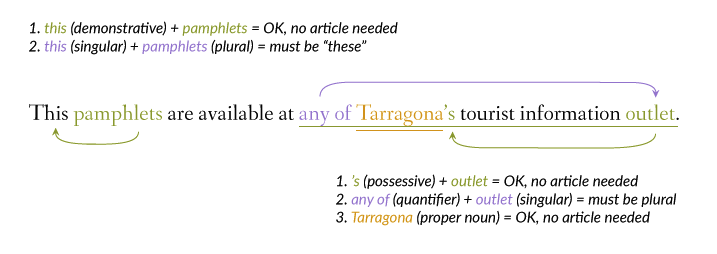
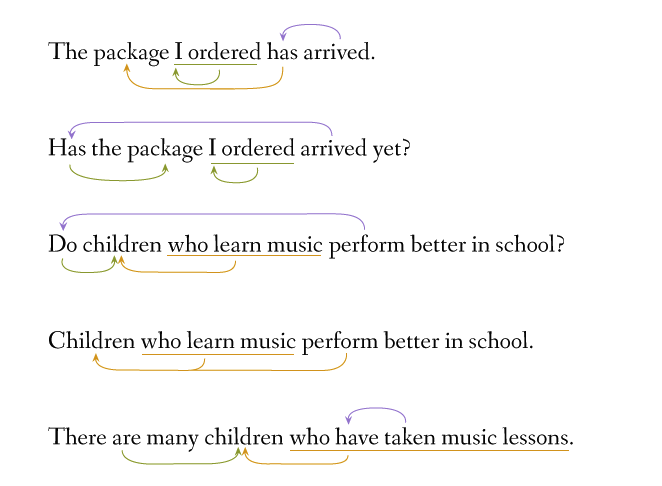
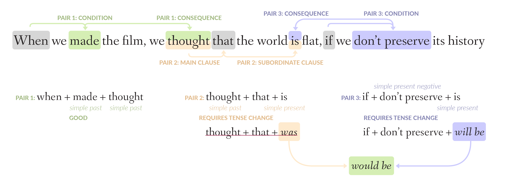

Without formal study, children eventually develop the ability to speak their first language or languages without grammatical mistakes. The linguistic community has not yet reached a consensus about why this is so, but it is clear that the fluent production of idiomatic language is a matter of habit. Yet, in schools and courses around the world, languages are too often taught as a set of rigid rules, which seems contrary to the brain’s natural learning process.
Rules are deliberate. Habits are automatic.
Hindered by rules, some learners never truly develop the habits that will help them become fluent users of a second language. Others fall into bad habits — often small, easily overlooked, yet significant mistakes which end up becoming fossilized because traditional curricula do not take them into consideration, or because traditional teaching methods do not correct them persistently enough.
Claire is a grammar checker and automated ESL/EFL tutor built for the global community of English learners, which harnesses a unique combination of artificial intelligence and linguistic expertise to help people teach themselves with every sentence they type.
Conventional grammar checkers are developed from an ivory-tower approach that is not robust enough for real-world language. Current natural language software is too reliant on statistics to be a trustworthy tutor on its own. Native speakers and teachers are not always immediately accessible. Unhindered by these obstacles, Claire provides English learners with the help they need, when they need it.
Many of the so-called “traditional” rules of English grammar were actually adapted from Latin grammar hundreds of years ago. Following them actually produces language that is less natural, because English is not Latin. Claire focuses on the errors that English learners actually make, because it was based on tens of thousands of sentences culled from chat logs, social media posts, and blogs written by non-native speakers.
Despite the name, most “natural language processing” applications struggle with anything that doesn’t resemble a New York Times article. But people certainly don’t talk like newspapers, and software should not expect them to, either. And now that conversations no longer take place exclusively in person, software should also be ready for the short forms, incorrect punctuation and haphazard capitalization that are typical of tweets and texts. Claire handles these with aplomb.
Many learner mistakes arise from literal translations of the learner’s first language, which can sometimes elude even the most experienced human teachers. However, Claire is pre-loaded with these insights and can respond robustly and nimbly to unnatural sequences of words.
Claire corrects learners’ mistakes on the spot — the most effective moment to do so. From the learner’s perspective, it is more intuitive to simply create a sentence and have it corrected automatically, rather than asking abstract questions about grammar, waiting to hear from the crowd, or merely receiving hints that something might be wrong. In addition, sentences can contain multiple overlapping errors that are difficult to show without consecutively transforming the text.
Even a linguistic savant would not be able to sit down at a desk and enumerate all the errors that are possible in a language. A true grammar checker for non-native speakers can only be the product of an intimate familiarity with the way non-native speakers actually speak.
Thanks to the tens of thousands of real sentences that helped shape the development process, Claire recognizes many mistakes that are too obscure to be known outside of academia or don’t belong to a formal or well-established category of learner errors.
Listed below are just a few unique features that showcase Claire’s sensitivity to subtleties in the user input. An exhaustive list of everything that Claire is designed to correct is here.
While texting and chat have given rise to short forms and acronyms like u, r, omg, and lol among native English speakers, it seems that the current wave of messaging apps has utterly transformed the written language of non-native speakers in regions such as South Asia and the Middle East. In some cases, the words have been shortened so much that they barely resemble English and impede understanding. Some learners have forgotten how to spell basic words correctly and use these forms even when they write by hand.
While issues of language change are always hotly debated, this level of non-standard usage can negatively affect a person’s work and social life — especially among native English speakers, who tend to (wrongly) conflate linguistic fluency and general competence. In addition, computers process text most efficiently and accurately when it is in a standardized format. So, out of necessity, Claire corrects short forms and poor punctuation rather aggressively, and as a side effect, learners can type in a way that feels natural to them while still receiving persistent corrections that ingrain the habit of correct spelling and punctuation.
When asking a computer to understand a sentence, correct spelling is a prerequisite to accuracy. But more often than not, conventional spell-checkers – even Apple’s spell-checker — are merely typo checkers, and do not take into account errors like conviniance, cuppal, leasning, shuar, mobail, defenetali, compiney. Claire is attuned to the phonological principles that cause these kinds of mistakes, which are in fact common to speakers of many non-Germanic languages, and actually tries to sound out unfamiliar words as a real human would upon encountering them.
Another important factor to consider in addressing English speakers of various regions is proper names. It would be frustrating to have your input autocorrected just because the software was developed from a US-centric perspective. While Claire does not claim to be absolutely perfect in this regard, it does feature a built-in dictionary of common Indian names and a sophisticated Wikipedia/Wiktionary lookup for unfamiliar sequences of words, which allows it to catch things like movie titles and celebrity names that may not be well-known outside their home region.
Sometimes, learner English is so strongly influenced by the person’s first language that the meaning is not immediately clear to native speakers who have not spent a good deal of time in that linguistic environment. Such insights have been programmed into Claire, giving her the ability to time-travel and respond instantly to sentences that might take a human months to understand properly.
| Form | Naïve interpretation | Intended meaning |
|---|---|---|
See one film I thought could participate |
Watch one film that I thought could participate | You see, I thought one film could participate |
I didn’t heard good your voice |
I didn‘t hear your good voice. | I didn’t hear your voice (very) well. |
Do you know the film’s another title? |
Do you know that the film is another title? | Do you know another title of the film? |
Byadgi chilli is very less pesticide fed chillies. |
? | Byadgi chili is a (kind of) chili that is not fed many pesticides. |
This color is everybody liking |
? | Everybody likes this color. |
sentence structure will be get it in correct form while using big sentence |
? | We will get the correct sentence structure when we use a big sentence? |
its time to ask why Melamchi could not even after 30 years people ask question |
? | It’s time to ask why people could not ask questions about Melamchi even after 30 years. |
justin yesterday film niki telling that while merging it will gt poor quality only |
? | Justin, Niki is saying that yesterday’s film will lose quality when it gets merged. |
Grammar checkers almost entirely focus on detecting errors that exist in the text. But only Claire is designed to detect errors of omission as well.
Many learners of English, especially those from Asian countries, often omit function words and verbs like “be”, “have”, and “there is”, even as main verbs:
While this term is basically unknown outside of academic literature, this phenomenon is actually quite common among Asian learners of English.
It looks like a missing object on the surface, but it is actually the result of two very subtle factors: misapplication of L1 word order and a failure to recognize how word order impacts the doer-receiver semantics of an English sentence. The following illustration shows why a Hindi speaker would produce a sentence like the ones above:

Claire harnesses a sophisticated algorithm and knowledge base to determine if a noun phrase represents an animate object or an inanimate object.
As the product of multiple languages, English has a rich vocabulary, but many learners seem to focus too heavily on nouns. While patterns for word derivation in English are not complicated, most curricula seem to neglect them, causing learners’ vocabulary to stagnate.
Claire can spot errors like these and convert a noun to the verb or adjective that the learner intended to use, making their vocabulary more versatile and natural.
Claire uses an idiosyncratic system to manage what linguists call “long-distance dependencies”. Long-distance dependencies are one of the main reasons that checking grammar and understanding the meaning of text is so difficult. But they are very common in natural language – in fact, the previous sentence contained two of them.



NLP software is surprisingly poor at parsing non-linear sentence structures, which are very common at all levels of language. While English is considered a subject-verb-object language, there are many exceptions to this. Moreover, detecting missing subjects and objects in the canonical order is tricky enough — detecting missing objects with alternative word orders requires near-surgical precision.
See the data on Google Sheets.
Too basic and simplistic to be effective.
Too basic and simplistic to be effective.
A good effort, but it does not analyze the input deeply enough to deliver truly substantial corrections.
Slow and not up to the task at all. There are some problems neural networks just aren't made for!
Solid for native speakers, with a nice interface, but it is clearly not intended for non-native speakers.
Quite good, but it doesn't offer explanations. The corpus-based approach is a good way to ensure that the corrections are (generally) natural, but it makes it difficult to target specific kinds of errors.
Claire's rule-based approach means that specific sentence patterns must be manually accounted for by the sentence analyzer and by the grammar correction programs, but this allows it to target specific linguistic phenomena and give truly useful and helpful feedback.
Claire has been tested on a bank of over 32,000 text fragments. These fragments range from three words to three paragraphs, and from nearly incomprehensible to newspaper-level sentences. Claire achieves over 99% accuracy in analyzing and correcting the 32,000 fragments of test data, and roughly 94% on untested data. However, this percentage will vary depending on how closely the input conforms to the kind of data that was used in developing the engine, and the presence of specific linguistic phenomena may also influence Claire’s ability to interpret the text correctly.
Studies have shown that words carry less than 10% of a message. The rest is conveyed through body language, facial expressions, and the “music of speech” — that is, the rhythm and intonation of your voice.
When you type a sentence, you might hear a voice in your head reading those words with the same melody and rhythm you use when speaking out loud. However, Claire can’t hear that. She can only hear the words in a machine voice, with a flat tone and an even rhythm, which is very different from how people actually talk.
Human languages – especially English – have many ambiguities that cannot be resolved through words alone. Because of this, Claire may not be able to analyze every sentence the way you intended it. Please keep that in mind as you interact with Claire.
Ambiguity is inherent in all aspects of language, from spelling (is “read” past or present tense?) to sound (“a new display” vs. “a nudist play”). Humans can use common sense to resolve ambiguity, but computers can’t. And in some cases, humans can’t either, which is what makes jokes and puns possible.
Informal commands in English consist of the plain form of the verb with no subject: “if you meet this guy don’t forget to punch him.” Unfortunately, missing subjects are a common feature of learner English, and correct sentences can also contain ambiguities if they lack proper punctuation. So, while a significant amount of work has gone into trying to determine whether a verb is a command or lacking a subject, Claire will give better results when commands are clearly distinguished by the word “please”.
Because words like “and” can connect a great variety of items, from single words up to complete sentences, it’s not always clear which two things are connected by conjunctions. Some learners make mistakes like “I went and take that”, which creates complications when approaching sentences like “Please read through the corrections I’ve made and practice them when you have the time.” Commas are often optional in such cases, but using them can make parsing easier.
Some common cases have been accounted for, like I am a fun loving person. While this would be a trivial problem if all the input could be assumed to be grammatically correct, that is not the case. Claire can correct phrases with numbers, such as This is a 15 minutes documentary, but other types of unhyphenated compound adjectives will create problems: There is a man eating alligator. The absence of an article before alligator would resolve the ambiguity if the sentence was written by a native speaker, but because non-native speakers typically omit articles, the non-hyphenated interpretation is equally or more likely: There is a man eating an alligator.
Using people’s names at the beginning or end of a sentence can produce ambiguity when the name not set off by a comma. In most cases, Claire can add a comma in the correct place if it is missing, but sometimes it may interpret the name as an element of the sentence.
that do not conform strictly to normal grammar: Some common interjections, like All the best, have been explicitly programmed into the sentence analyzer. However, other set phrases that contain verbs, such as dream come true, easier said than done, long time no see were not considered, as they do not occur frequently in learner English.
The most difficult ambiguity to deal with when processing English text in particular is word class ambiguity. English words can represent different parts of speech without changing their spelling, and their inflected forms can also belong to more than one word class. For example, take the word “mean” and its four forms:
| Form | Possibility 1 | Possibility 2 | Possibility 3 |
|---|---|---|---|
mean |
adjective | plain/plural verb | singular noun |
means |
singular verb | plural noun | interjection (in Indian English) |
meaning |
noun | -ing form verb | interjection (in native English) |
meant |
simple past | past participle |
Proper usage of function words like articles and auxiliary verbs can help to mitigate this ambiguity. However, their absence or incorrect usage presents major problems for syntactic parsing.
| Sentence | Looks like | Actual function | Intended form |
|---|---|---|---|
My chat showing pink colour what is meaning |
present continuous verb | noun | “the meaning” |
What is mean by good enough? |
adjective | verb | “is meant” |
is dat means dey have sent the DVD? |
plural noun | verb | “does that mean” |
I am economically independent , but not all the ways. Means I cant wake up without my mother shout |
plural noun | interjection | “meaning” |
Because grammar checking relies so heavily on an accurate analysis of the nouns and verbs in a sentence, this is by far the most significant obstacle to perfect performance. Claire has been tested on over 32,000 text fragments, so many of the common cases have been accounted for, but it is only possible to discover these ambiguities by chance. During the development process, roughly 2.5% of new sentences (25 in 1000) contained unaccounted-for word class ambiguities, which accounted for approximately 10% of bad output from Claire.
Many new and upcoming AI applications are based on a “personal assistant” model that responds to the user’s typed or spoken questions and commands. However, even though Claire is an automated tutor in some respects, it is designed to evaluate sentences, not to respond to questions or commands about English.
So rather than asking “What is the difference between because and because of?”, try writing your own sentence to see which one works and which one doesn’t.
There is a very important reason for this: As demonstrated above, it is difficult enough for computers to understand normal, real-life language and to accommodate non-standard usages of words. When words are “mentioned” rather than used, the ambiguity and complexity increase to a level that is far beyond the capabilities of a machine. It is a bit like asking a calculator how to do addition. While natural language works well as a user-friendly interface for apps like search or banking, it cannot work if language is precisely the problem that brings the user to the app.
Claire uses certain characteristics of words as heuristics to approximate real-world understanding, which is how it is able to distinguish “The man has eaten” from “This food has eaten”. However, it does not perform semantic analysis or inference. So, Claire will ignore things that are not strictly grammatical mistakes. For example, “He's at/in the hospital”; “That's why I didn't come / haven’t been coming to class”; “She went to his father’s house”.
For a similar reason, Claire is designed to handle only a specific subset of preposition and collocation errors. For example, adjective-noun collocations (“heavy rain” but “strong wind”) were not considered. In these cases, the possibilities are too numerous for a rule-based approach, and it is often too difficult to judge something as completely incorrect or completely correct. Machine learning may be useful in this area, but without the ability to suggest a result with 100% confidence, the learner would be required to judge the appropriateness of multiple — and possibly unfamiliar — choices.
Claire works best when the user marks the boundaries of their sentences properly. Run-on sentences have been accounted for to a limited extent, but, in general, missing punctuation results in ambiguities that can degrade performance.
Also, while Claire may be able to grasp the grammatical structure of sentences much faster than a human, its ability to comprehend text does not surpass that of a human. A baseline level of resemblance to standard English is necessary for optimal performance.
So, it is not reasonable to expect Claire to deliver perfect results on semantically opaque or overall incoherent input, such as:
Many learners struggle with comma usage and forming complete clauses:
Formal writing styles, like essays and books, often contain complex sentences that may be, for example, interrupted – many times, even – by commas and dashes and little asides. Advanced writers, wishing to appear sophisticated, also use participial phrases and clauses frequently. However, Claire was not designed for this level of language and may erroneously edit complex, but correct, sentences.
In addition, there are certain sentence structures that were not considered in developing the sentence analyzer, because they are not a feature of lower- and intermediate-level learner language. These include, among others, such structures as:
The possible types of mistakes that a language learner can make are as infinite as the possibilities of language itself. As far as Claire is concerned, there are three types of mistakes:
Claire identifies mistakes that follow certain patterns. However, many mistakes do not belong to a category of common mistakes. They might even be limited to just one or two people. They might even be accidental, and the same person might not make that mistake again. As a result, these mistakes cannot be generalized in a way that would allow Claire to correct them.
As mentioned above, Claire is not a mind-reader. I am in the hospital and I am at the hospital are both grammatically correct, even though they mean two very different things. Unfortunately, Claire cannot magically jump out of the app and find you in real life to determine whether you are a patient or a visitor.
These are the mistakes that Claire is trained to detect. They include things like: wrong verb forms, wrong plurals, lack of agreement between two things that should agree, missing words, and wrong word order.
Also, please keep in mind that Claire was developed based on real sentences that were written by real people. Often, real mistakes reflect a logic that comes from the person’s first language. Made-up errors will probably not produce good results.
Your text led the program down a path where it encountered a mistake in its code. This does not necessarily mean that your sentence was grammatically incorrect.
Claire uses NLP (natural language processing) tools to help understand the role of each word in a sentence. However, if the text does not look like a newspaper article, the accuracy of these tools decreases significantly. So, Claire’s process involves multiple layers of analysis and corrections that start simple and become more complex.
Corrections that only require simple analysis, such as most spelling mistakes and many fixed expressions, are made before the sentence is split into different parts. This enables more sophisticated text manipulation later on. However, it also means that it is not easy to determine where “early” corrections came from. In addition, if a sentence contains many spelling mistakes, it is too cumbersome to show each one separately.
So, Revision 1 shows all of the simple edits at a glance. Revision 2 shows the difference between the original input and the final output.
The algorithms behind Claire’s sentence analysis need to accommodate a vast range of correct and incorrect sentence patterns. However, since parts of complex correct sentences often look like incorrect sentences, this is trickier than it might seem. To give a simple example, He talking about climate change is wrong, but I read an article talking about climate change is fine.
The sentence analyzer logic has been painstakingly refined over many iterations, and it produces correct results on almost all of the 32,000 sentences that were used as test data. A 95% accuracy rate on new data was observed during development, although the actual accuracy can vary, depending on the level of the text and the amount of ambiguity it contains.
First, the application itself requires 2 servers: one for the Claire engine (which processes the text you type) and one for Stanford CoreNLP (which does the initial grammatical parsing).
In addition, CoreNLP and similar natural language processing tools draw on an enormous bank of data in order to process sentences, regardless of their length or complexity. That means that seemingly short and simple sentences might require the same amount of time as long, complex sentences.
The grammar checking program needs very specific labels to do its job properly. For example, the word that alone has six different grammatical fuctions. See the Terminology section for more information.
The sentence analyzer uses terminology that may seem quite technical and obscure. While the familiar parts of speech — noun, verb, and adjective – suffice for many conventional teaching scenarios, analyzing a sentence often requires very fine-grained distinctions. This is especially true in English, since many words can belong to different word classes depending on the context.
Like and that are two excellent examples of this, and putting them together further compounds the complexity:
| sentence | function of "like" | function of "that" | meaning |
|---|---|---|---|
Many people [like that]. |
verb | object of verb | Many people enjoy that thing |
Many people like that [like that]. |
adverb of manner | referent of manner | Many people enjoy that thing in that way |
Products [like that] doesn’t need any marketing. |
similarity | object of comparison | Products that are similar to that thing… |
I want one [like that]. |
similarity | object of comparison | I want one similar to that |
How would you make them [like that]? |
verb (causative) | object of verb | …make those people enjoy that |
| adverb of manner | referent of manner | …make those things in that way | |
It’s not [like that] |
similarity | object of comparison | It is not similar to that. |
| adverb of manner | object of comparison | That's not how it is. | |
It’s not [like that] would be a problem or anything. |
beginning of subordinate clause | subject | It's not as if… |
Similarly, the error annotations were meant to be helpful, but many of them can be quite technical. In general, there seems to be an inverse relationship between the level of the mistake and the ability to explain it in a simple way. For example, I am go there. However, Claire’s automatic corrections are clear enough to help the learner develop the habit, which is more useful to most people than understanding technical details about a grammar point.
In addition, there are a few cases where a label was originally created for one purpose but was later found to be unnecessary or overlapping with another label. However, by that time, the engine had already become complex enough that it was no longer possible to change the label. So there may be a certain degree of imprecision in the labeling; however, it is also this fuzziness that allows Claire to handle non-native text as well as she does.
A noun phrase that is the subject of a linking (copular) be verb, or a left-displaced object (automatically corrected).
A noun phrase that is the subject of any other kind of verb.
A noun phrase that is the subject in a “for NOUN to VERB” structure.
The direct object of a transitive verb, which can also (but not very often) apply to “whose NOUN” in a relative clause.
The agent of a passive verb, which starts with by.
The indirect object of a ditransitive verb, or the recipient in a causative verb pattern.
A noun phrase that begins with a preposition but is not explicitly a time expression or place expression.
A noun phrase whose syntactic role could not be determined.
Linking be that connects a subject to an adjective or noun phrase.
Linking be that precedes its subject in a question.
A non-phrasal verb that is the main verb of its clause.
Do, have, be or a modal verb that precedes its subject in a question.
A phrasal verb and object that is the main verb of its clause.
There is.
A verb which is a subordinate verb of another verb, adjective, or 5WH-word, which can look like VERB, VERBing, to VERB, or “preposition + VERBing”.
VERBing or VERBed that forms a reduced relative clause.
Bare infinitives, commands, or other non-matrix verb phrases that may be in syntactically ambiguous positions.
Single 5WH-words that mark questions (as opposed to wh-clauses).
Chunks that begin with a 5WH-word and mark questions (as opposed to wh-clauses).
Connecting words that begin a clause, like because, if, since, as well as some other fixed phrases that begin a clause.
A group of words that ends in ADJECTIVE or “ADJECTIVE + enough”.
A group of words that ends in ADVERB, a fixed expression that modifies a verb phrase, or a phrase that marks a transition.
A fixed expression of group of words that denotes the time of an action.
Particular words or prepositional phrases that explicitly denote a place.
“VERBing” as a subject, or occasionally “to VERB” (but Claire may misinterpret this)
“All/5WH + SUBJECT + VERB” or “5WH + to VERB” as a subject.
Any other usage of “All/5WH + SUBJECT + VERB” or “5WH + to VERB”.
Question marks and periods.
A preposition that has been “stranded” at the end of a structure where its complement comes at the beginning, or a preposition whose complement could not be determined.
Sometimes, the particle of a phrasal verb doesn’t get grouped in with the verb and its object.
That that connects a verb and a clause.
If that connects a verb and a question clause.
Like and than at the beginning of a clause that modify a verb.
And, but, or, so that connects to clauses, or then in an if-then sentence.
And or or that connects two verb phrases or adjective phrases that share the same subject.
That, who, which that begins a relative clause.
That that corresponds to की in Hindi (or equivalents in other Indian languages) but is not used in the same way as English.
An adjective phrase that come after the noun phrase it modifies.
Names that are used as direct address or fixed phrases that are not meant to be evaluated grammatically.
Subjects that come after their verbs in specific patterns such as “Here is NOUN” and “QUOTE said person”.
A group of words set off by quotes that could not be unambiguously interpreted as a subject, object, or prepositional phrase.
A quoted group of words that follows words like song, word, film.
The development of Claire represents an attempt to “teach” language to a computer in order to teach language to humans. While these two ways of teaching are obviously very different, the journey has yielded a few significant insights about English and language technology.
Despite the apparent magic of tools like Apple’s Siri and IBM’s Watson, natural language technology is still, even in 2016, chiefly employed in mechanical tasks that do not require deep understanding: fetching data; providing more relevant search results; identifying named entities; recommending restaurants; captioning images; summarizing press releases, medical reports, and academic papers; identifying trends in word usage among various demographic groups for marketing purposes and academic research.
So, while there is software that can “read” a document and tell you that X company is launching Y product on Z date, or that F protein binds to G molecule during H process, that doesn’t mean the software actually understands the process of launching or binding. What you are seeing is the algorithmic dance of word statistics and knowledge databases.
But words and sentences do not materialize from the collision of numbers inside our brains; they emerge out of communicative intent and are governed and transformed by a battery of rules that we are not even conscious of.
Statistical language models correspond to natural language as faithfully as economic models correspond to actual human behavior. Some economists have recognized this and joined forces with neuroscientists and psychologists to create the interdisciplinary field of “behavioral economics”, which seeks to give us a more comprehensive view of how people make decisions. Yet linguists have been more or less banished from the field of natural language technology over the last couple of decades, forced to cede their territory to computer scientists.
“Every time I fire a linguist, the performance [of our speech recognition software] goes up” —Fred Jelinek
Whether the use cases have driven the approach or vice-versa, this is not surprising: statistical methods and models are scalable; linguistic expertise is not. Engineers can achieve a surprising amount of translation coverage in a new language without even knowing the first thing about it. But the problem is that if they don’t know anything about the language, does the computer actually end up learning anything about that language? And how accurate can the results actually be?
This is the main reason why, even after the terabytes of data that it has processed, Google Translate remains so (amusingly) disappointing, only able to talk like Homo Linguisticus, not like an actual human. And while Claire does not claim to (or need to) incorporate “semantics” to a significant extent, the accuracy of Claire’s sentence analyzer is a testament to the merits of merging the breadth of statistical parsing with the precision of a rule-based approach, informed by old-fashioned linguistic expertise.
Many apps, natural language engines, and English learners focus almost exclusively on content words. These are the “heavy hitters” that could almost comprise a news article on their own, in a “Me Tarzan, you Jane” kind of way: senator, schedule, meeting, demand, historical significance, momentum, announce, campaign, victory. They demand the spotlight — and language learners, language teachers, and software developers eagerly give it to them. When people think of enriching their vocabulary, they usually think of adding content words to their mental storehouse of words.
Function words, on the other hand, are unassuming words like what, of, so, that, and arguably be and its inflections. Software generally ignores them because they are too common and mundane to provide higher-level information like the overall gist, tone, or perspective of an article. Learners often ignore them because their first language marks the content-and-function relationship differently or because the peculiar stress pattern of spoken English makes them sound insignificant.
However, function words have an outsize impact on the meaning and grammaticality of a sentence. To understand the weight of function words, you only need to consider the question “What do you do?”, which does not contain a single content word yet possesses a real-world significance that could hardly be overstated. Or consider the dramatic and non-intuitive difference between sets of phrasal verbs like “take in/out/up/down/on/off/over/away/back”.
So, every word in an English sentence is important, including the “small” ones. Perhaps especially the small ones.
In spite of this linguistic truth, the NLP community is doubling down on content words, as the multiplication of word vectors is poised to become the “next big thing” in the quest to reach a more fine-grained level of comprehension.
This is a very technically dazzling solution to one problem – word sense ambiguity – that is most immediately applicable to two specific use cases: data retrieval and machine translation. In other words, it is the work of engineers, not linguists.
However, outside of machine translation, the distinction between the different senses of polysemous words like “law” or “record” is quite small compared to, say, making an entire statement hypothetical by changing “can” to “could”. And just because people don’t search or shop for thoughts, that doesn’t diminish the difference between “over-thinking” something and “thinking it over”.
The data that was used in developing Claire makes another point clear: Not only are function words as important as content words for general understanding, the majority of the obstacles to English fluency and mastery lie in the function words. When native speakers perceive someone’s English to be “broken”, they are usually referring to the misuse or absence of function words.
For example, eat is a content word, and in many Asian languages, “Ate” can be a complete sentence, whose meaning might be “Yes, I have eaten” or “Have you eaten?”, depending on the situation. The onus of comprehension is on the listener.
English, on the other hand, is known as a “low-context language”, where the speaker must make sure that no blanks are left unfilled: Who ate? When did they eat? In fact, English is stricter than any other language in the world in terms of sentence completeness and word order. This is a unique characteristic of the language that is very helpful for general computational comprehension, because function words are not only semantically important, they are also mandatory in English.
And, for Claire in particular, it is a win-win situation, because the grammaticality of almost every aspect of an English sentence can be assessed before you even need to consider its real-world meaning. The software does not have to concern itself with the meaning of the verb, whether it is “eat” or “prognosticate”, but it is still able to communicate to the learner that their sentence was incomplete and to teach them how to generate the correct form of past-tense sentences and questions with any verb.
This idea works for more than just individual words. In fact, entire sentences can be reduced to sequences of grammatical roles. For example, the subject of an English statement must precede its verb and it must agree with that verb in number, whether it is 2 or 20 words long. Consider the following sentence:
I think that a lot of the world music that we hear right now in America or in the West is not really representative of what people are listening to in West Africa.
In terms of grammar checking, the relationship between “music” and “is” would elude most NLP applications, due to the distance between the words. But the most significant insight, for engineers and English learners alike, is that this sentence is nothing more than a sophisticated version of the pattern I think (that) THING is DESCRIPTION.
Again, this is a win-win situation. By reducing sentences to grammatical formulas like subject-verb-object, it becomes at least somewhat possible to normalize the basically infinite range of possible input. Distance between words is no longer a barrier to constructing patterns and detecting deviations from those patterns. And highlighting the phrases that constitute these sequences gives learners more insight about English sentence construction.
Claire’s requirements necessitated some compromises to accommodate a wide variety of native and non-native English, but the developers of the next wave of NLP software, and grammatical parsers in particular, would do well to invite linguists back into the fold. Together, they will be better able to tame the Wild West of conversational language and all the linguistic phenomena that separate real English from See Spot run (or This is a pen, if you prefer).
Until then, voice and chat interfaces will be no more than lipstick on the pig of those clunky touch-tone menus from the 90s (“Press 2 for Spanish”) and translation software output will remain only marginally better than an @ElBloombito tweet.
The information that Claire provides consists of English lessons and nothing else.
Claire is made available for end users at no cost and in good faith. Please refrain from reverse-engineering it or sending robots to spam it.
If you are a developer and you wish to use Claire in a web or mobile application, you are welcome to do so. If you wish to use the API for a commercial app, please contact us for licensing information.
We cannot promise that Claire’s results will always be 100% accurate, meet your expectations, or help you become the next Hemingway (although that would be wonderful).
Occasional interruptions in access may be necessary for general maintenance and improvements of the service.
We will not ask for any personally identifiable information, although the sentences you check will be stored on our servers for evaluation purposes. We will not share your sentences with third parties, but we advise you to transmit sensitive information through Claire at your own risk. We may publish or share statistics about users’ English that is based on aggregated data without exposing individual sentences.
Effective April 15, 2016.
Thank you for using Claire (the Service). The Service is provided by Culture Unplugged Labs, Inc. (CUL, we, us, our), registered at the following address:
Culture Unplugged Labs, Inc.
148 Castro St. #820
Mountain View CA 94041 USA
Your usage of the Service constitutes your agreement to these Terms. If you are using the Service on behalf of a business, that business accepts these terms, and that business will be the entity hereafter represented by “you”. If you do not agree with these Terms, please do not use the Service.
CUL reserves the right to change, modify, add, or remove portions of these Terms at any time by posting a notice on the website of the Service. You are responsible for reviewing and familiarizing yourself with any such modifications, which are effective upon first posting. Your usage of the Service following any changes made to the Terms constitutes your acceptance of the changes.
These Terms define the entire relationship between CUL and you relating to your usage of the Service. The Terms supersede any prior, contemporaneous, or inconsistent agreements, whether oral, written, or electronic. They do not create any third-party beneficiary rights. CUL reserves all rights of agreement and registration termination.
Using the Service does not give you ownership of any intellectual property rights pertaining to the Service, nor of the right to use any branding or logos found on this website. The Service is protected by international copyright, patent, and trademark laws.
You may display, reproduce, print or download information that is output by the Service only for personal, non-commercial, and educational use.
You may not:
the Service, except as permitted under applicable law or as described in these Terms;the Service;the Service; orthe Service that affects the user’s experience in any way.the ServiceYou may publish a link to the Service on your own Web site, provided that you do not:
CUL endorses your site, products, or services, or that you are affiliated with CUL in any way;CUL content, surround it with your own advertising or identity, or charge a fee for any link to the Service;the Service from any Web page or Web site containing libelous, obscene, or criminal material, or material that infringes, violates, or advocates the infringement or violation of any third-party rights; orthe Service except as permitted in these Terms or as specifically permitted by CUL.Please see our API license for details about how you can embed the functionality of the Service in your own Web and mobile application.
Please see our Privacy Policy below for details about how we use and process the data we collect from the Service.
The Service and all information dispensed thereby are provided on an “as is” and “as available” basis, without warranty of any kind, express or implied, including without limitation the implied warranties of title, non-inftingement, merchantability, and fitness for a particular purpose, and any warranties implied by any course of performance or usage of trade, all of which are expressly disclaimed.
In no event is CUL liable for lost profits, revenues, or data; financial losses; indirect, special, consequential, exemplary, or punitive damages; or personal, social, political, economic, environmental, or spiritual crises that may arise during or after your usage of the Service.
You will hold harmless and indemnify CUL; its affiliates; and all employees, contractors, directors, suppliers, and representatives of CUL and each of CUL’s affiliates from all liabilities, losses, damages, claims, and expenses, including reasonable attorneys’ fees, arising from or related to the use of the Service or violation of these Terms, including any liability or expense arising from claims, losses, damages, suits, judgments, litigation costs and attorneys’ fees. CUL reserves the right to assume the exclusive defense and control of any matter otherwise subject to indemnification by you, in which you will assist and cooperate with CUL in asserting any available defenses.
All matters relating to your access to or use of the Service and these Terms, including all disputes, will be governed by the laws of the United States and the State of Delaware, excluding its conflicts of law rules. You expressly agree that the proper jurisdiction for any claim or action arising out of or relating to the Terms or your use of the Service is in the state or federal courts located in Delaware and you further agree and submit to the exercise of personal jurisdiction of such courts for the purpose of litigating any such claim or action. Use of the Service is not authorized in any jurisdiction that does not give effect to all provisions of these Terms, including without limitation this section. You agree that any cause of action arising our of or related to the Service must commence within one year after the cause of action arises; otherwise, such cause of action is permanently barred.
The information provided by the Service is intended to help individuals improve their understanding and production of English. It is not intended to constitute medical, legal, tax, financial, or other advice, nor is it intended to replace consultation with a qualified physician, attorney, or other professional. The Service is an educational resource and should not be mistaken for anything else.
CUL is not responsible for any sensitive personal information you input, such as addresses, phone numbers, credit card numbers and email addresses. No personal information (like your home address or mobile number) is required to use the Service. However, the Service uses your browser or device’s identifying stamp to enforce usage limits where appropriate.
When you press the "Check!" button, your text is sent to our servers, unencrypted, for processing. In order to evaluate performance and aid possible future development, the text is recorded in a system log, along with the corrections of that text.
CUL has no interest whatsoever in the text outside of linguistic purposes. Your text will never be shared with a third party, and CUL does not claim ownership of any intellectual property rights to the text you submit or to the altered text that is returned by the Service.
However, statistics regarding the proportion and nature of the text corrections may be recorded. These statistics may be used to generate reports about global language usage for research purposes. Individual sentences will not be shared, published, or quoted.
This website and the Service do not intentionally set any cookies on your computer for the purpose of collecting personally-identifying information (PII). If access to the Service is restricted via login in the future, cookies may be used to store your username and password to provide a smoother user experience for you. However, you are free to disable cookies in your browser.
This website may make use of Google Analytics to provide non-identifying information about its users. This includes, but is not limited to, the number of visitors, their locations, IP addresses; the duration of their visits; the browser and device from which the Service was accessed. Again, no PII is collected, and all data is used purely for the improvement of the Service and the website.
Your usage of the website constitutes your agreement to the use of Google Analytics for this purpose.